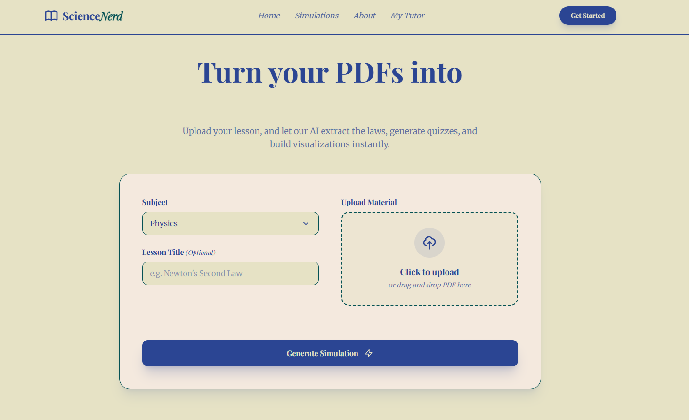
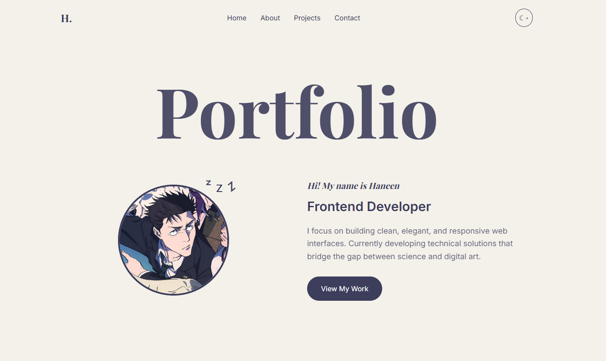

Selected Works

ScienceNerd
A web-based science simulation tool that processes PDF content to create interactive learning experiences.
Tailwind CSS
JavaScript
View Case Study →

Minimalist Portfolio
My Year 2 Final Project focused on high-end typography and a clean "Doodle" inspired UI.
HTML5
Responsive Design
GitHub Repo →